Abstract
Human cognition does not separate understanding and generation. A teacher at a whiteboard speaks and draws together, each modality reshapes the other. In this paper, we bring this coupled loop to artificial systems. Masked Diffusion Models (MDMs) are ideally suited to this task, yet existing samplers either decode text and image interleavedly or independently update them in parallel branches that share only previous-step history, but not the other modality's latest decisions within the same step; combined with MDMs' inability to remask, cross-modal contradictions are neither detected nor repaired. We introduce Self-Correcting Coupled Markov Jump Processes (SC-CMJP), a framework in which one modality's transition rates are functionals of the other modality's confidence score, as weighted by cross-modal attention. Furthermore, a remasking jump retracts commitments the moment cross-modal evidence turns against them. In conjunction with SC-CMJP, we introduce CO2Jump (Self-COrrecting COupled Jump), a novel training-free single-pass sampler for joint multimodal geneneration. For training and evaluation purposes, we have created and will release three large-scale joint multimodal generation corpora: JEdit-1M, JMaze-200K, JNono-200K, with matching in- and out-of-distribution benchmarks. CO2Jump achieves best joint performance for image understanding and editing as well as visual reasoning (maze and nonogram solving). The performance of the sampler scales monotonically with the number of denoising steps, evidence that the benefits of cross-modal coupling compound across the trajectory.
Self-Correcting Coupled Markov Jump Processes
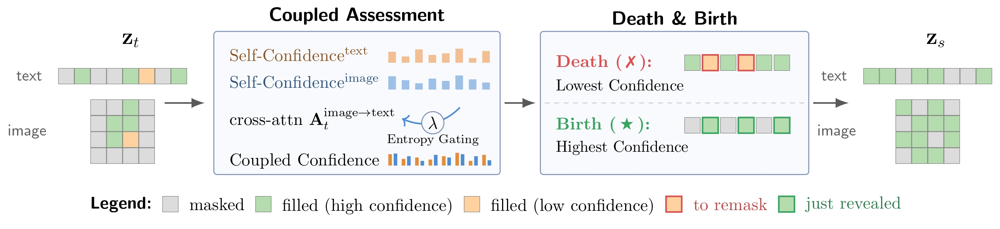
CO2Jump sampler. A single denoising step from zt to zs. From one forward pass, the model produces per-token Self-Confidence for both modalities; cross-modal attention Aimage→textt propagates text confidence to image positions, and an entropy-based gate λ mixes self and cross signals into Coupled Confidence. The Death jump remasks the lowest-confidence committed tokens, and the Birth jump reveals the highest-confidence masked tokens under the noise schedule.
Datasets and Benchmarks for Joint Multimodal Generation
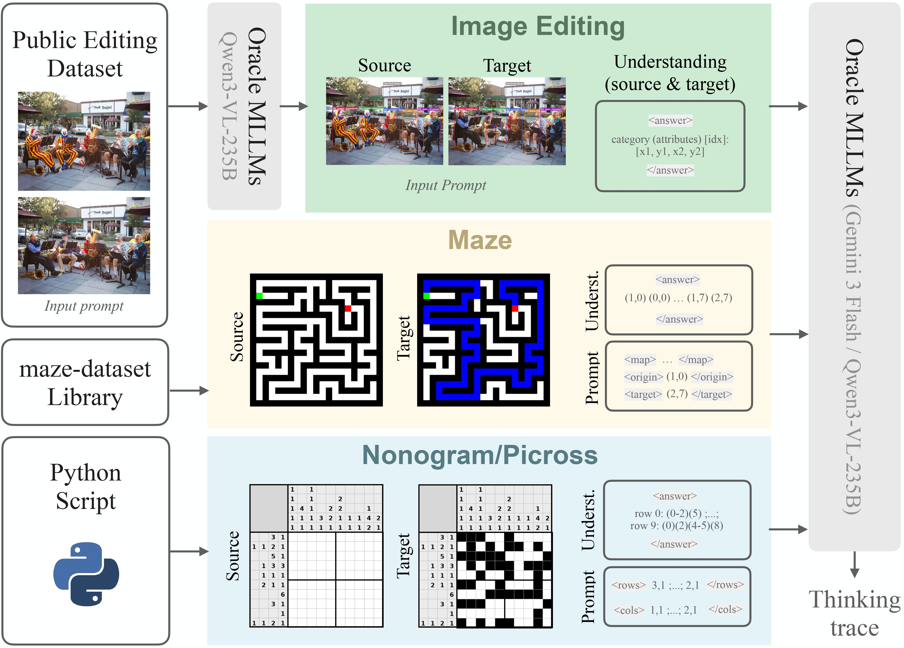
Dataset curation pipeline. For JEdit-1M, raw editing pairs are augmented by an oracle Qwen3-VL-235B that produces both the per-image scene-graph understanding and the thinking trace. For JMaze-200K and JNono-200K, source/target images and the structured understanding are produced algorithmically.
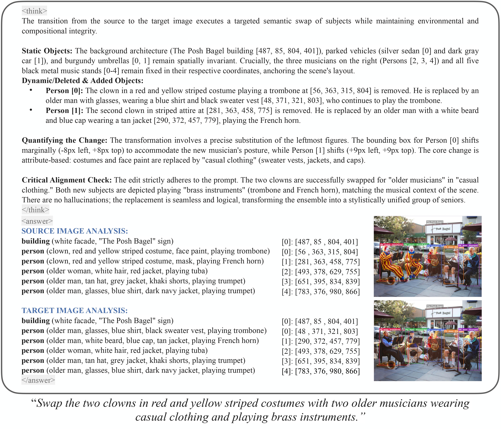
JEdit-1M training sample. A natural-language edit prompt (bottom) paired with the source and target images (right), the oracle Qwen3-VL-235B thinking trace, and the per-panel source/target scene-graph understanding. The bounding boxes and labels from MLLM's grounding solution are overlaid on the corresponding images.
Scaling Sampling Steps
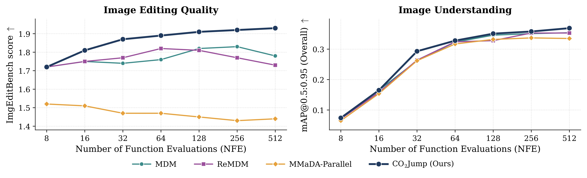
Sweeping NFE from 8 to 512, CO2Jump is the only sampler that improves monotonically on both metrics: ImgEditBench rises from 1.72 to 1.93 and overall mAP from 0.074 to 0.369. Single-modality baselines plateau and regress at high NFE, and MMaDA-Parallel degrades from 1.52 to 1.44, its uncoupled schedule cannot productively use additional steps. The gap also widens: at 8 NFE the four methods sit within 0.009 mAP, but at 512 NFE CO2Jump is +0.015 / +0.016 / +0.034 ahead of MDM / ReMDM / MMaDA-Parallel. Coupling compounds across steps rather than saturating.
Qualitative Trajectories Expose the Uncoupling Failure Mode
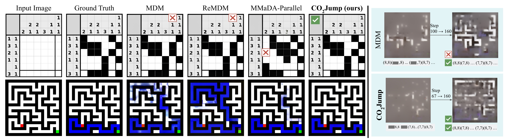
Every baseline violates at least one Nonogram clue (red ✘), while CO2Jump satisfies all clues; on the maze, baselines wander into wrong corridors or cut through walls and CO2Jump reproduces the ground-truth path. The right column exposes why: by step 160 of MDM's trajectory the text answer is correct but the image has drifted onto a different path, because under MDM's independence factorization the image branch never sees the latest committed text. CO2Jump's chain-rule decomposition propagates each text commitment into image scoring at the same step, so both modalities converge on the same solution.
Joint Image Editing and Understanding with CO2Jump

Add a deer standing near the edge of the snow-covered forest on the right side of the image, close to the leaning tree.

Change the background in the image from a lush, green forest and grassland to a snowy tundra landscape.
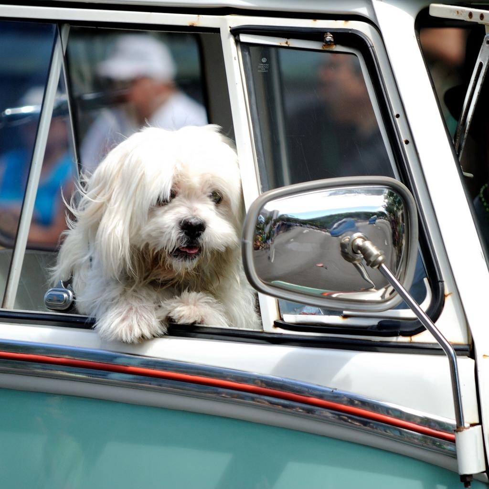

Change the street view visible in the car's side mirror to a beautiful coastal scene with a sandy beach and ocean waves.
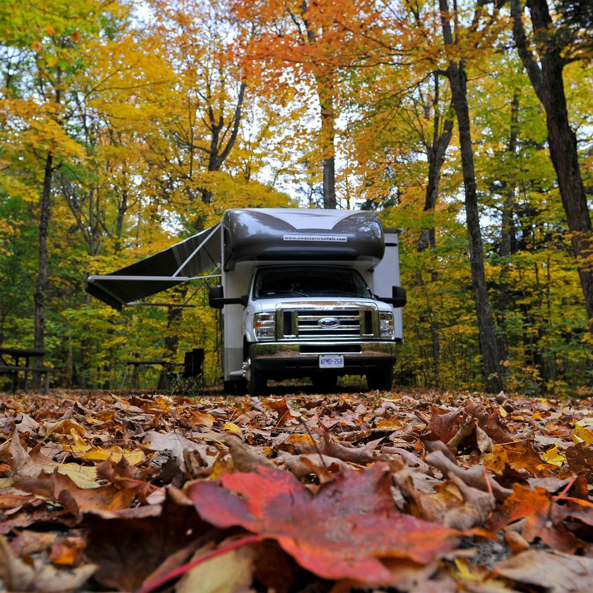

Change the forest in the picture from autumn to spring.
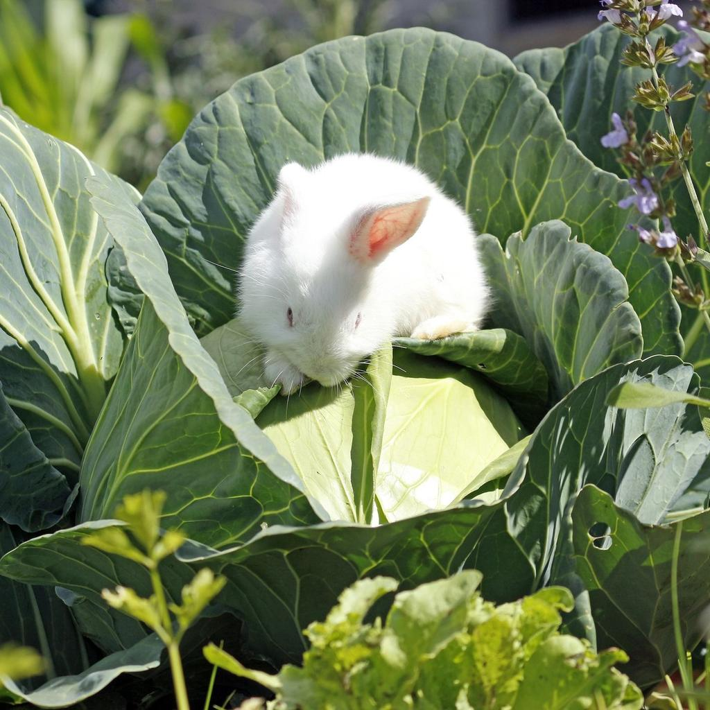

Remove the white rabbit sitting on the cabbage.

Replace the human in the image with a giant pumpkin.
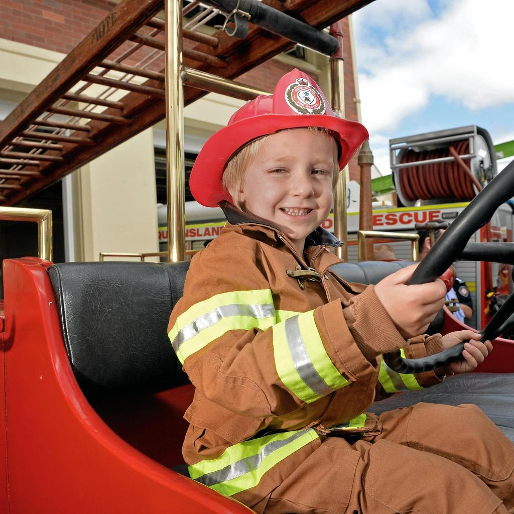

Replace the human in the image with a large, colorful beach ball.

Replace the human in the image with a cactus.
Maze Solving with CO2Jump

<map> ... </map> <origin> (1, 3) </origin> <target> (3, 1) </target>
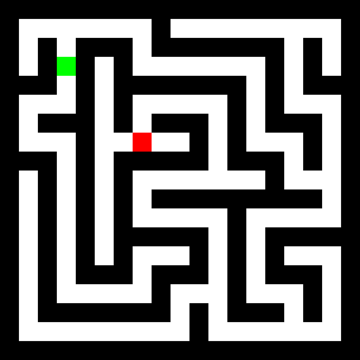

<map> ... </map> <origin> (1, 1) </origin> <target> (3, 3) </target>
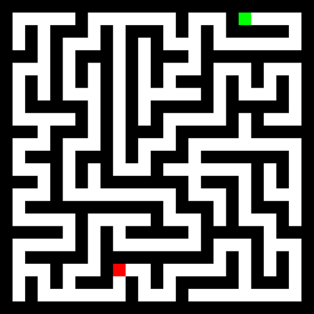

<map> ... </map> <origin> (0, 9) </origin> <target> (10, 4) </target>
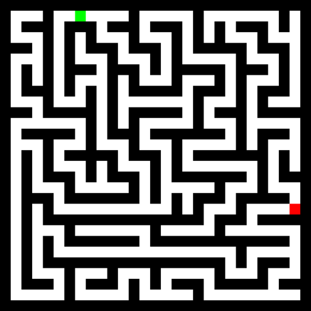

<map> ... </map> <origin> (0, 3) </origin> <target> (9, 13) </target>
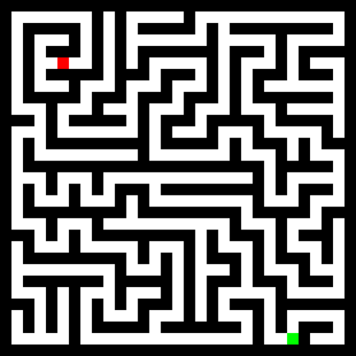

<map> ... </map> <origin> (14, 12) </origin> <target> (2, 2) </target>
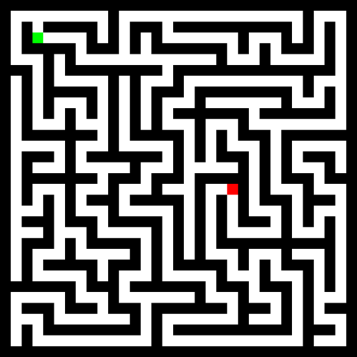

<map> ... </map> <origin> (1, 1) </origin> <target> (8, 10) </target>
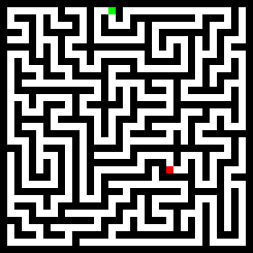

<map> ... </map> <origin> (0, 7) </origin> <target> (11, 11) </target>
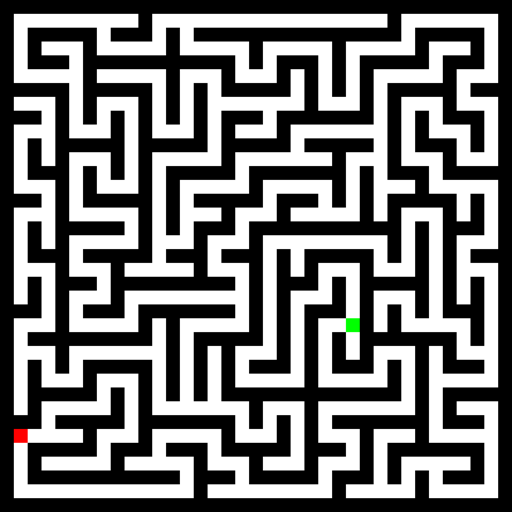

<map> ... </map> <origin> (11,12) </origin> <target> (15,0) </target>
Nonogram Solving with CO2Jump
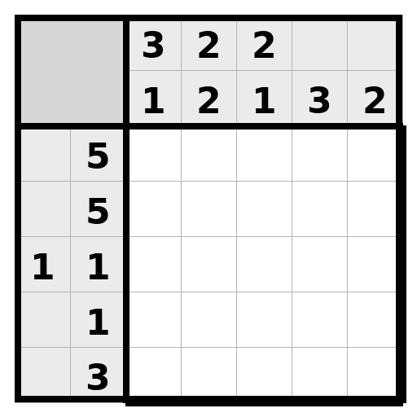

<size> 5 </size> <rows> 5 ; 5 ; 1,1 ; 1 ; 3 </rows> <cols> 3,1 ; 2,2 ; 2,1 ; 3 ; 2 </cols>
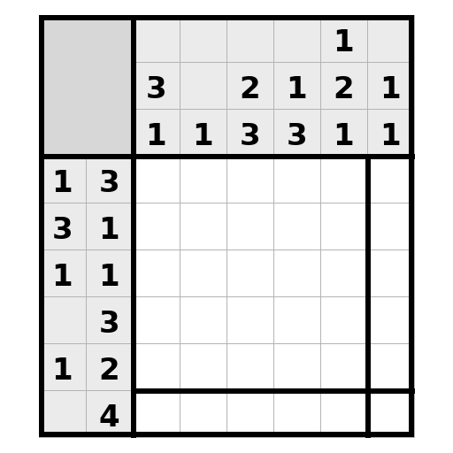

<size> 6 </size> <rows> 1,3 ; 3,1 ; 1,1 ; 3 ; 1,2 ; 4 </rows> <cols> 3,1 ; 1 ; 2,3 ; 1,3 ; 1,2,1 ; 1,1 </cols>
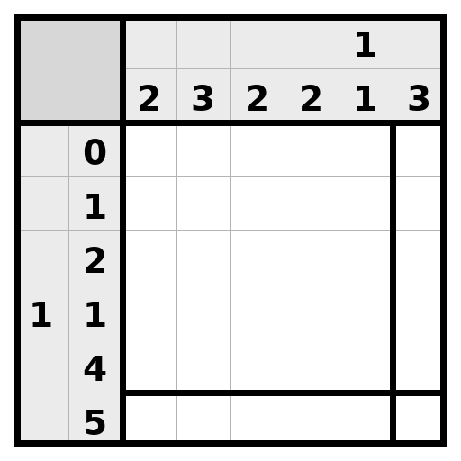

<size> 6 </size> <rows> 0 ; 1 ; 2 ; 1,1 ; 4 ; 5 </rows> <cols> 2 ; 3 ; 2 ; 2 ; 1,1 ; 3 </cols>
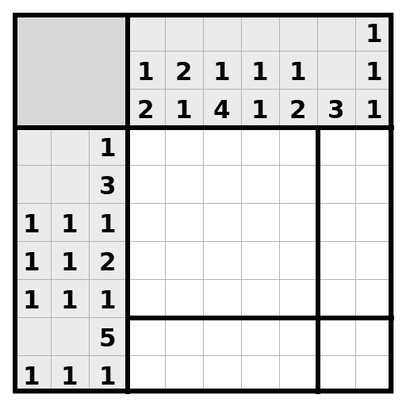

<size> 7 </size> <rows> 1 ; 3 ; 1,1,1 ; 1,1,2 ; 1,1,1 ; 5 ; 1,1,1 </rows> <cols> 1,2 ; 2,1 ; 1,4 ; 1,1 ; 1,2 ; 3 ; 1,1,1 </cols>
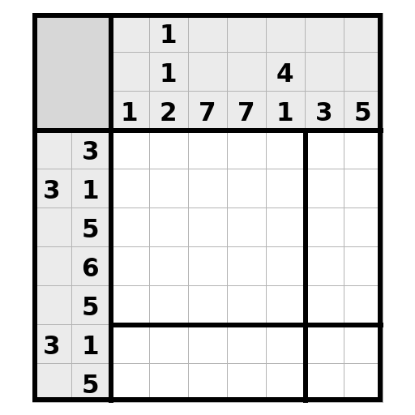

<size> 7 </size> <rows> 3 ; 3,1 ; 5 ; 6 ; 5 ; 3,1 ; 5 </rows> <cols> 1 ; 1,1,2 ; 7 ; 7 ; 4,1 ; 3 ; 5 </cols>
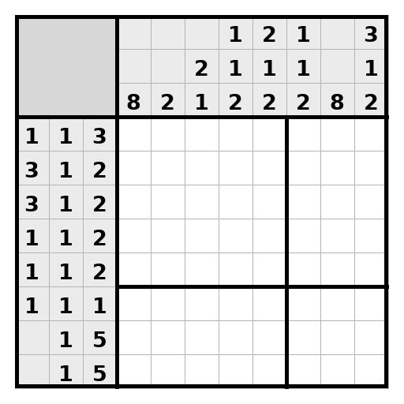

<size> 8 </size> <rows> 1,1,3 ; 3,1,2 ; 3,1,2 ; 1,1,2 ; 1,1,2 ; 1,1,1 ; 1,5 ; 1,5 </rows> <cols> 8 ; 2 ; 2,1 ; 1,1,2 ; 2,1,2 ; 1,1,2 ; 8 ; 3,1,2 </cols>
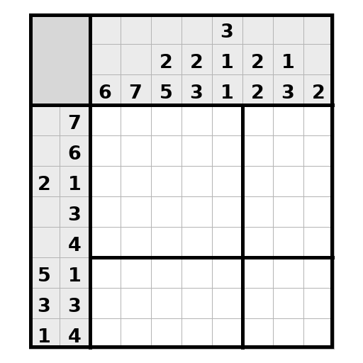

<size> 8 </size> <rows> 7 ; 6 ; 2,1 ; 3 ; 4 ; 5,1 ; 3,3 ; 1,4 </rows> <cols> 6 ; 7 ; 2,5 ; 2,3 ; 3,1,1 ; 2,2 ; 1,3 ; 2 </cols>
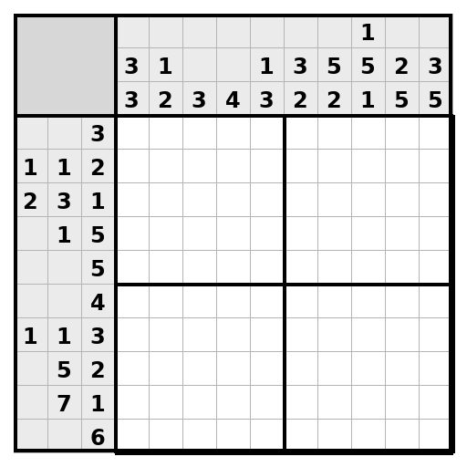

<size> 10 </size> <rows> 3 ; 1,1,2 ; 2,3,1 ; 1,5 ; 5 ; 4 ; 1,1,3 ; 5,2 ; 7,1 ; 6 </rows> <cols> 3,3 ; 1,2 ; 3 ; 4 ; 1,3 ; 3,2 ; 5,2 ; 1,5,1 ; 2,5 ; 3,5 </cols>
BibTeX
@article{le2026concurrent,
title={Concurrent Image Understanding and Generation: Self-Correcting Coupled Markov Jump Processes},
author={Minh-Quan Le and Armand Comas and Alexandros Lattas and Stylianos Moschoglou and Pedro Vélez and Amit Raj and Aaron Germuth and Thabo Beeler and Dimitris Samaras and Di Qiu},
journal={preprint},
year={2026},
url={https://coupled-jump.github.io}
}